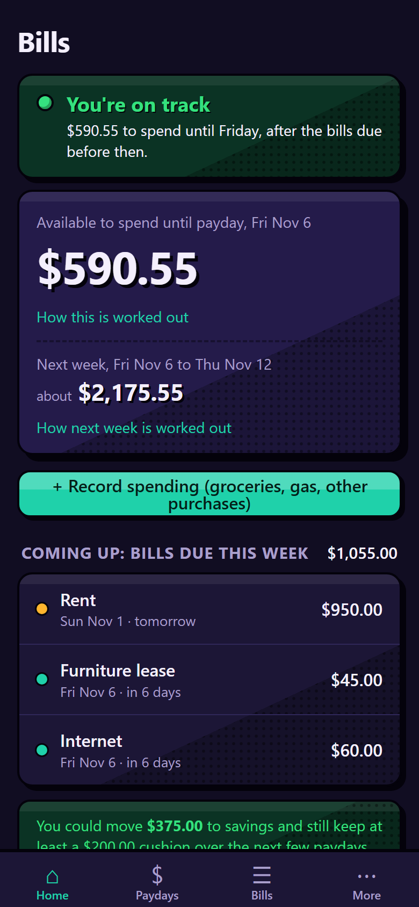
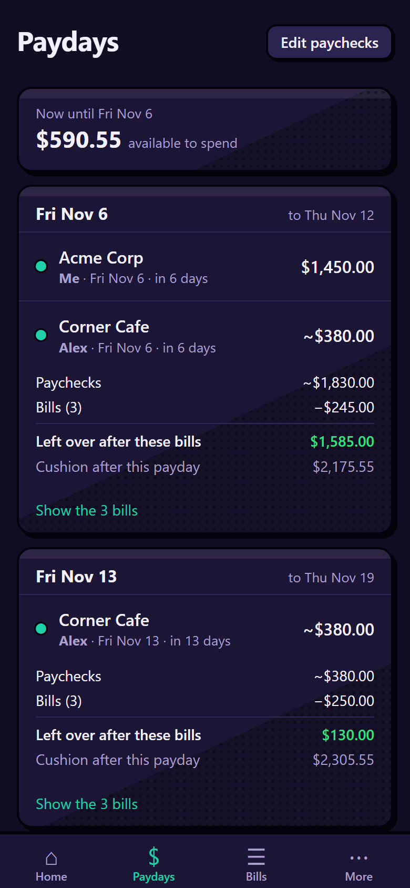
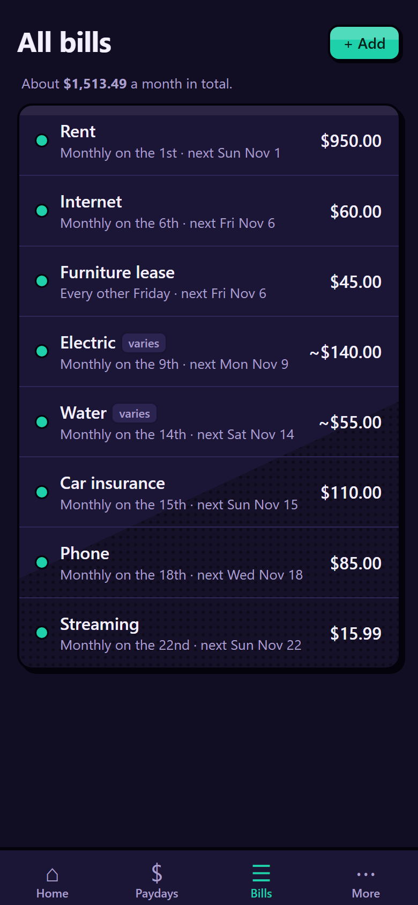

Know what you can spend until payday.
Bill Planner is a free bill and payday planner for your phone. Add your bills and paychecks once, and it shows how much is really available to spend before your next payday, after the bills due before then.
No account. No bank login needed. Your information stays on your phone.
Free, no ads, no tracking. Works on iPhone, Android and computers.



What it does
Available to spend
One big number: what's left until your next payday after the bills due before then, with a plain explanation of how it was worked out.
Next week, too
A warning when next week's bills are bigger than next week's pay, so you don't overspend this week and come up short.
Nothing slips by
Past-due bills stand out, autopay bills that haven't gone through are flagged, and payments the bank hasn't shown yet are tracked.
Real-life bills
Weekly, every other week, monthly or one-time bills. Bills that change each month, like electric. Transaction fees too.
Money set aside
Holding money for a car repair or a big bill? Set it aside so it isn't counted as spendable. Savings tips appear when there's room to save.
Reminders
Put every bill in your phone's calendar with alerts, so you're reminded even when the app is closed.
Private by design
- No account or sign-up. Open it and start.
- Your information stays on your device. Bill Planner has no servers, so nothing you enter is sent to anyone.
- No ads and no tracking.
- Your bank login is never needed. Type in your balance from your bank's app. If you want balances to update by themselves, you can optionally connect your bank through SimpleFIN Bridge, a separate paid service, where you sign in on their website, never in Bill Planner.
- Backups are yours. Save a backup file wherever you like, such as iCloud Drive or Google Drive.
Add it to your phone
Bill Planner runs in your phone's web browser and can be added to your Home Screen like any other app. There's nothing to download from an app store.
iPhone
- Open jwjones35.github.io/billplanner-app/app in Safari.
- Tap the Share button (the square with an arrow pointing up).
- Tap Add to Home Screen, then Add.
Android
- Open jwjones35.github.io/billplanner-app/app in Chrome.
- Tap the ⋮ menu in the top-right corner.
- Tap Add to Home screen or Install app.
Questions
Is Bill Planner really free?
Yes. There's no charge, no ads and no trial period. If it helps you, there's an optional tip button, but the app stays free either way.
Do I have to give it my bank login?
No. You type in your checking balance from your bank's app now and then. Connecting a bank is optional, and even then you sign in on SimpleFIN's website, never in Bill Planner.
Where is my information kept?
Only on your own phone or computer, inside the browser. Nothing is sent anywhere, because Bill Planner has no servers. That also means you should save a backup file now and then.
Does it work without internet?
Yes. Once you've opened it, Bill Planner works offline. (Connecting a bank, if you choose to, needs internet to update.)
What if I get a new phone?
Save a backup file from the app (More › Backup), then open Bill Planner on the new phone and choose "Restore a backup file".
Is this financial advice?
No. Bill Planner is a planning tool. Its numbers are only as good as what's entered and what your bank reports, so always check your bank before making a payment you can't undo.
Made by one person
Bill Planner is built by one person to answer one simple question: "what can I spend this week?" If it helps you, a small tip keeps it going.
Opens Buy Me a Coffee, a separate website. Tipping is completely optional.